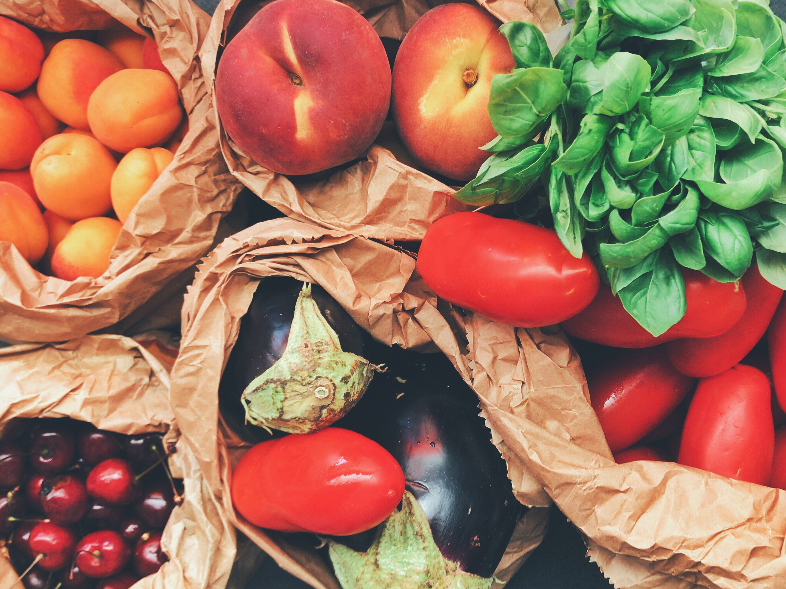
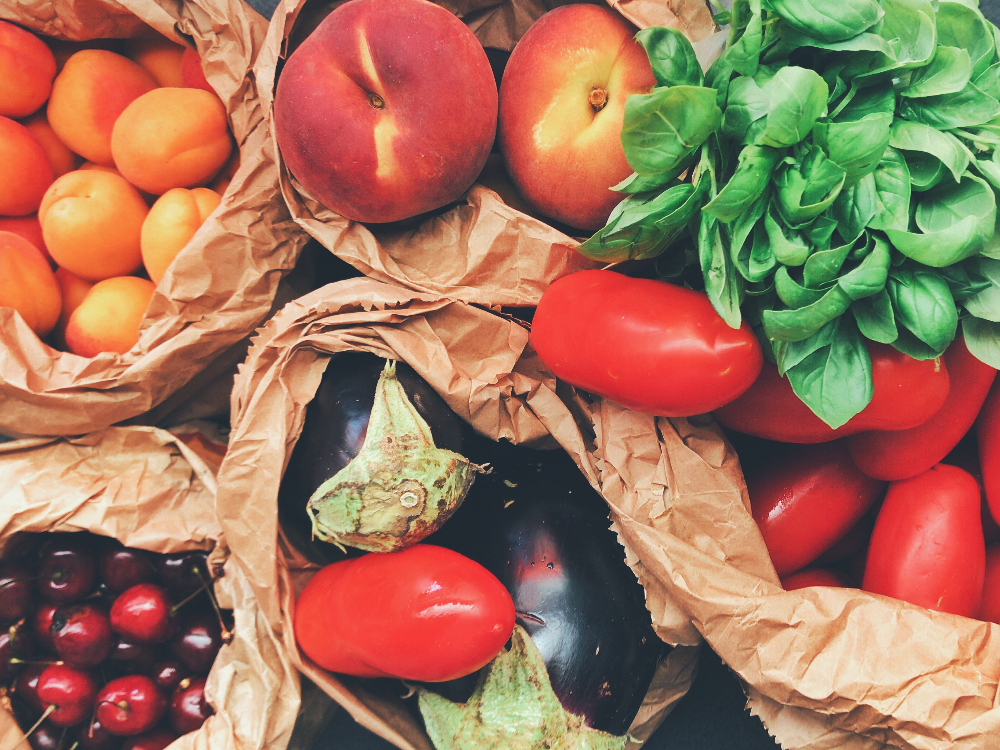

How to live sustainably?
There are plenty of ways to live more sustainably, like buying local and in-season foods that are farmed sustainably. Foods that aren’t in season often require certain chemicals to be grown that aren’t necessary for in-season foods, or they need to be shipped from somewhere that experiences a very different climate from your own. Sustainable farming discourages waste and encourages low-impact, seasonal diets. Eating less meat (or no meat at all) is another way to live sustainably.

 

Industrial meat is one of the biggest contributors to pollution, deforestation, and greenhouse gas production. Beef and lamb are the most harmful meats when it comes to eating with the environment in mind.
Another example of sustainable living is buying items made using recycled materials or designed to be zero-waste. Many cosmetics companies produce items in bottles and jars made from recycled products. You can also find clothing, bedding, and furniture made from recycled materials.